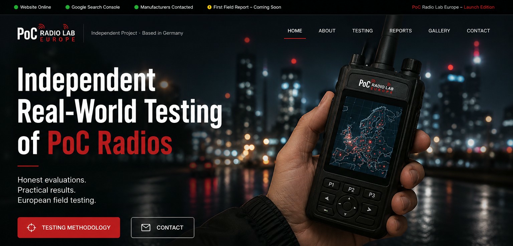
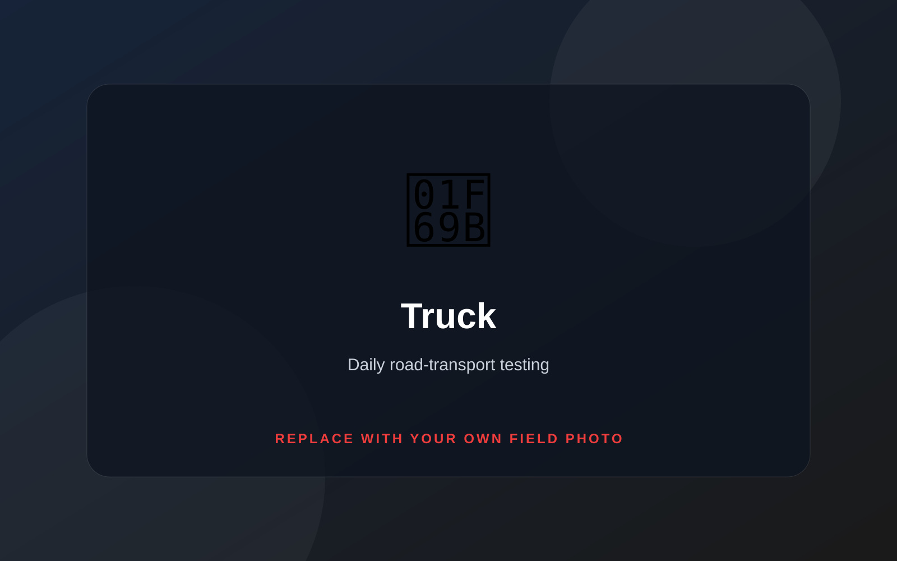
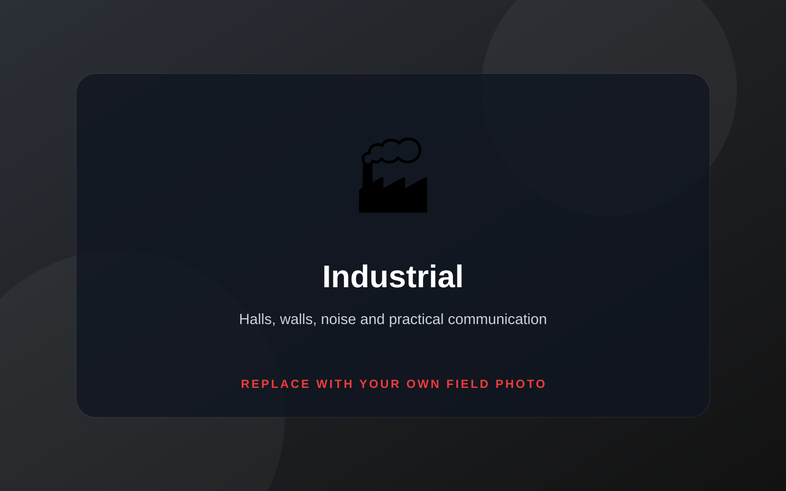
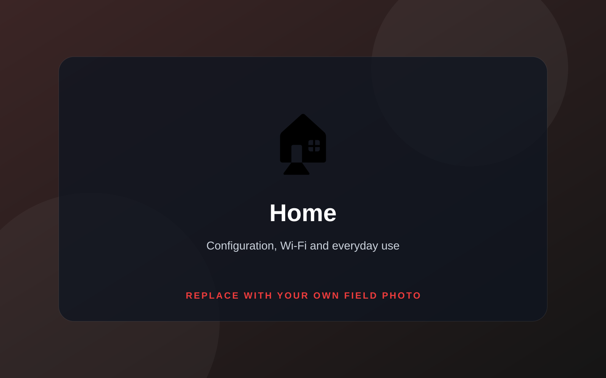
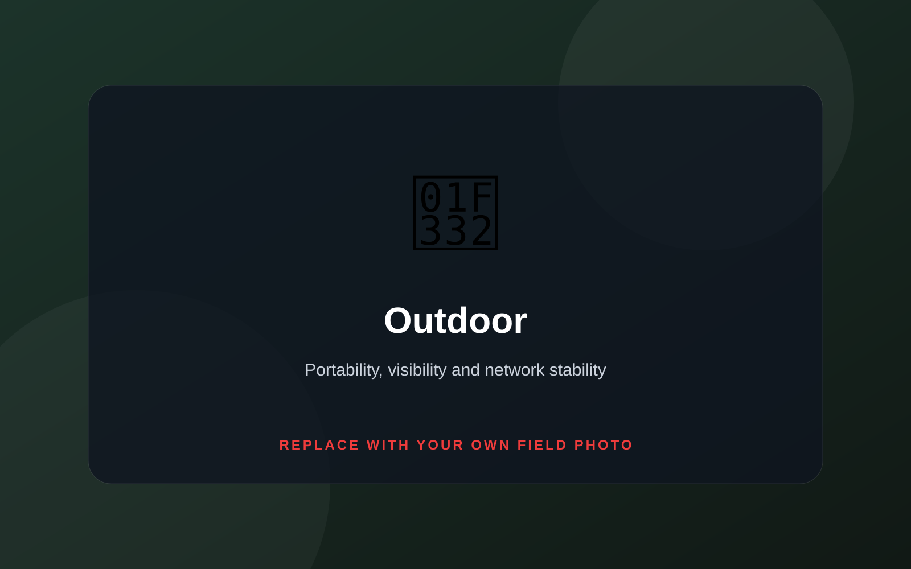

Independent
No paid reviews. No sponsored opinions. Receiving a test device never guarantees a positive result.

Independent field evaluation
Honest evaluations. Practical results. European field testing.
Why PoC Radio Lab Europe?
PoC Radio Lab Europe is a personal, independent project created by a radio communication enthusiast in Germany. The aim is simple: evaluate PoC devices during everyday use and provide clear, honest feedback.
No paid reviews. No sponsored opinions. Receiving a test device never guarantees a positive result.
Devices are used in normal operating conditions rather than judged only from a desk or laboratory.
Reports focus on what matters to users: audio, battery, network stability, usability and reliability.
Field observations are gathered in Germany and during everyday European road-transport use.
How devices are evaluated
Every device follows the same sequence so observations remain structured and comparable.
Packaging, included accessories, condition and first visual inspection.
Firmware, network, application, accounts and initial operation.
Normal use in transport, at home, outside and where possible in industry.
Long days, network transitions, noise, charging and repeated communication.
Strengths, weaknesses, issues, practical recommendations and ratings.
A structured written report supported by original field photography.
Testing environments
The photographs below are temporary placeholders and can later be replaced by original field images.

Road transport, long working days, urban traffic, motorways and LTE continuity.

Where available: halls, steel structures, noise, walls and practical voice communication.

Setup, Wi-Fi operation, charging, ease of use and normal everyday communication.

Portability, display visibility, network stability and voice quality outside.
Evaluation scope
Live project
This panel can be updated as the project develops.
Reports
Real reports will be added only after a device completes the full test process.
Report archive
The first report will include original photography, structured observations, strengths, weaknesses and practical recommendations.
Gallery
These placeholders will later be replaced with original photographs from real evaluations.
Manufacturers
Manufacturers may provide PoC devices for honest real-world testing and a structured written report.